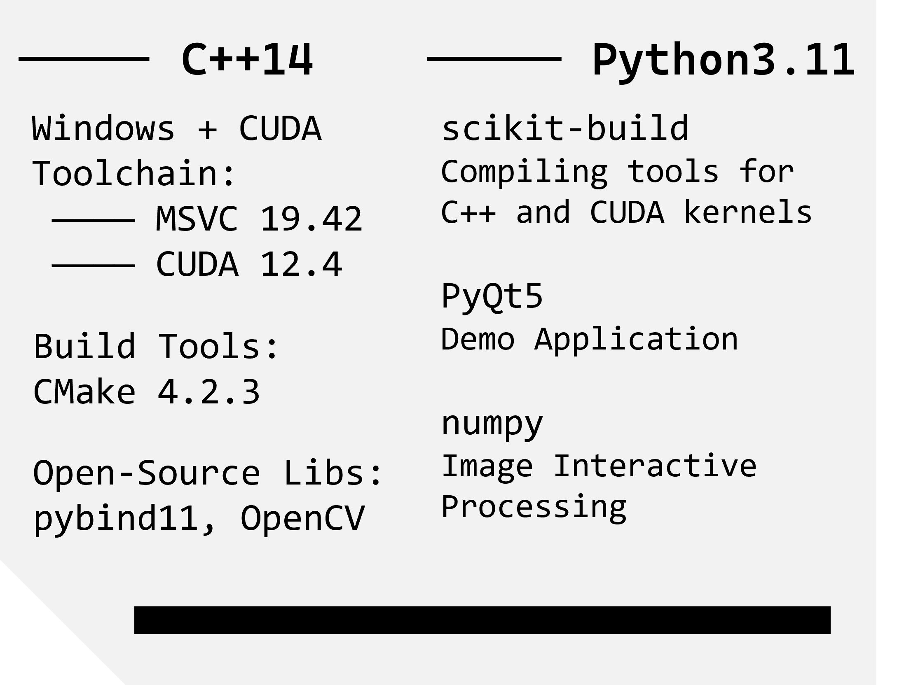
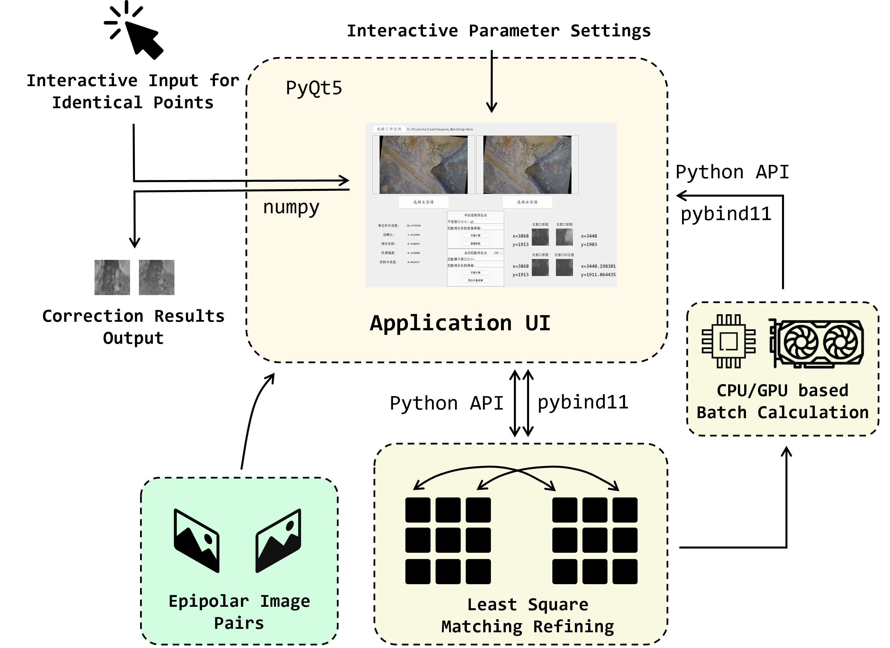
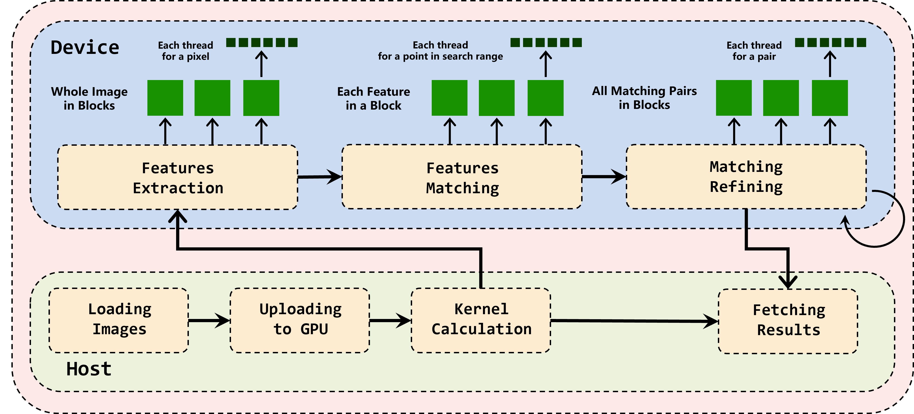

A project of the sub-pixel Least-Square Matching Refining Algorithm for Epipolar-Rectified Stereo Image Pairs in window-size areas. The classic algorithm is proposed by Ackermann in Digital Image Correlation: Performance and Potential Application in Photogrammetry (1984), where the correspondence search reduces to a one-dimensional problem along epipolar lines, enabling both fast convergence and high accuracy.
We provide the source code in C++ and a Python API library built upon it. A PyQt Demo Application and the CUDA-based GPU-accelerated version are also provided.
Up to now we have successfully tested the C++ and Python built from source code on Windows 10 and Windows 11.



This project is licensed under the Apache License 2.0. See the LICENSE file for details.
If you use our work or our data in your research, please cite:
@misc{Tang2026GLSMEI,
title = {G-LSMEI: GPU-Accelerated Least-Square Matching Refiner for Epipolar Image Pairs},
author = {Haojun Tang and Jiahao Zhou},
year = {2026},
howpublished = {\url{https://github.com/DonaldTrump-coder/G-LSMEI}},
note = {Version 1.0.2. Apache License 2.0}
}